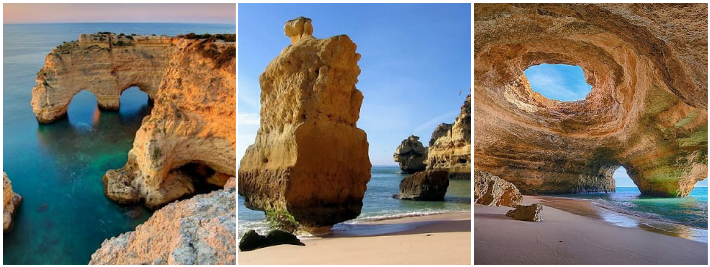
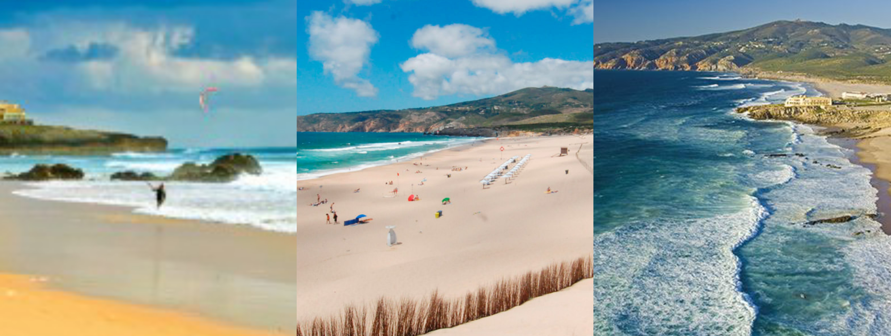
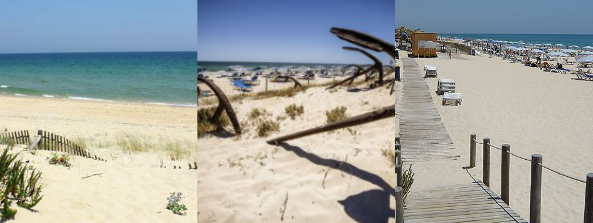
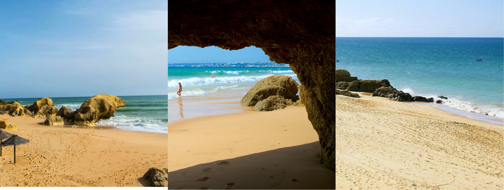
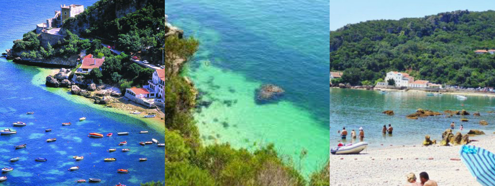

As melhores praias de Portugal
Praia da Dona Ana, Lagos

Sabia que a Praia da Dona Ana, no Algarve, foi eleita em 2013 como a melhor praia do mundo pela revista espanhola Condé Nast Traveller? Ficou surpreendido? Pois não ficará depois que puder conhecê-la de perto e saber o que muitos já descobriram: esta certamente merece estar entre as melhores praias de Portugal.
Localizada na cidade de Lagos, apresenta uma paisagem de tirar o fôlego, com formações rochosas impressionantes, areias douradas, águas claras e tranquilas e falésias repletas de grutas. Embora a faixa de areia seja extensa, aconselhamos que chegue cedinho e garanta o seu lugar, pois a Praia da Dona Ana é bastante procurada e costuma ficar bem cheia nos finais de semana.
Praia da Marinha, Lagoa

E porque pode ser considerada uma das melhores praias de Portugal? É simples. Trata-se de uma das mais bonitas e emblemáticas, além de ser considerada como uma das 10 mais belas praias da Europa e uma das 100 mais belas praias do mundo pelo renomado Guia Michelin.
A Praia da Marinha é bastante conhecida pelas suas falésias e pela qualidade da água, cuja transparência permite aos turistas visualizar o fundo marinho com precisão. Os seus valores naturais singulares foram reconhecidos com o galardão “Praia Dourada”, concedido pelo Ministério do Ambiente.
Praia de Galapinhos, Setúbal

Localizada em pleno Parque Natural da Arrábida, a Praia de Galapinhos é uma das mais famosas de Setúbal e uma das melhores praias de Portugal. Além disso, foi eleita em 2017 pelo site European Best Destinations como a melhor praia da Europa.
Fama e reconhecimento não são por acaso: um mar calmo, de águas cristalinas que permitem vislumbrar a vida marinha é um argumento mais do que suficiente. É perfeita para quem não abre mão da sua privacidade, visto que o acesso à praia é mais complicado, fator que faz deste ambiente um deserto. Tem apenas 550 metros de comprimento e uma faixa de areia até o mar de 60 metros, características que a tornam única.
Praia do Guincho, Cascais

A Praia do Guincho, em Cascais, tem o seu lugar garantido na nossa lista de melhores praias de Portugal. E é merecido, pois a beleza incontestável do lugar é destino certo para aqueles que estão em busca de uma paisagem deslumbrante e, sobretudo, de emoção. Sim, não pense que as águas da Praia do Guincho são calmas, muito pelo contrário: o seu mar revolto é influenciado pelas correntes marítimas do Oceano Atlântico, cujas ondas gigantescas atraem surfistas de todo o mundo. Por lá, o vento bate forte, o que propicia condições ideais para a prática de desportos aquáticos como windsurf e kitesurf.
Praia do Barril, Tavira

Um areal extenso e magnífico a perder de vista. A Praia do Barril é uma das praias mais calmas da costa algarvia, mesmo durante o verão, por este motivo, é bastante procurada por famílias em férias pelo litoral Sul português. Além disso, ostenta regularmente a Bandeira Azul, sinal que indica a sua qualidade ambiental e faz desta uma das melhores praias de Portugal.
Como todo litoral da região do Algarve, possui um mar cristalino e surpreendentemente frio, detalhe que não chega a intimidar os visitantes à procura de descanso. Apesar dessa característica, é um dos destinos favoritos dos naturistas. Não possui rochas, peculiaridade que permite banhos de mar ainda mais descontraídos e relaxantes.
Praia da Galé, Armação de Pera

Entre as melhores praias de Portugal está a Praia da Galé, uma das mais impressionantes do Algarve. Trata-se de uma zona calma, ideal para quem deseja fugir de lugares movimentados.
Está dividida em duas partes, a parte leste e a parte oeste. Enquanto a parte leste é mais estreita e cheia de formações rochosas que naturalmente constroem piscinas naturais, a parte oeste é ampla e aberta, perfeita para os desportos náuticos. É um lugar tão peculiar que oferece ao turista características distintas; basta que escolha, de acordo com a sua preferência, o posicionamento ideal.
Praia do Portinho da Arrábida, Setúbal

Pequena, mas de uma beleza exuberante! É por isso que a Praia Portinho da Arrábida, em Setúbal, foi considerada, em 2010, uma das Sete Maravilhas de Portugal na categoria praias e falésias.
Está localizada numa área de conservação ambiental, por isso a pesca é uma atividade proibida. Entretanto, se a sua intenção não é praticar pesca submarina, poderá divertir-se com um delicioso banho de mar em águas calmas e transparentes, ótimas para mergulho.